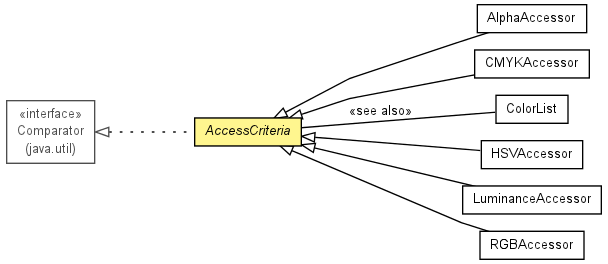

toxi.color
Class AccessCriteria
java.lang.Object
 toxi.color.AccessCriteria
toxi.color.AccessCriteria
- All Implemented Interfaces:
- java.util.Comparator<ReadonlyTColor>
- Direct Known Subclasses:
- AlphaAccessor, CMYKAccessor, HSVAccessor, LuminanceAccessor, RGBAccessor
public abstract class AccessCriteria
- extends java.lang.Object
- implements java.util.Comparator<ReadonlyTColor>

Defines standard color component access criterias and associated comparators
used to sort colors based on component values. If a new custom accessor is
needed (e.g. for sub-classes TColor's), then simply sub-class this class and
implement the Comparator interface and the 2 abstract getter & setter
methods defined by this class.
| Methods inherited from class java.lang.Object |
equals, getClass, hashCode, notify, notifyAll, toString, wait, wait, wait |
| Methods inherited from interface java.util.Comparator |
compare, equals |
HUE
public static final AccessCriteria HUE
SATURATION
public static final AccessCriteria SATURATION
BRIGHTNESS
public static final AccessCriteria BRIGHTNESS
RED
public static final AccessCriteria RED
GREEN
public static final AccessCriteria GREEN
BLUE
public static final AccessCriteria BLUE
CYAN
public static final AccessCriteria CYAN
MAGENTA
public static final AccessCriteria MAGENTA
YELLOW
public static final AccessCriteria YELLOW
BLACK
public static final AccessCriteria BLACK
ALPHA
public static final AccessCriteria ALPHA
LUMINANCE
public static final AccessCriteria LUMINANCE
AccessCriteria
public AccessCriteria()
getComponentValueFor
public abstract float getComponentValueFor(ReadonlyTColor col)
setComponentValueFor
public abstract void setComponentValueFor(TColor col,
float value)